전체 기사
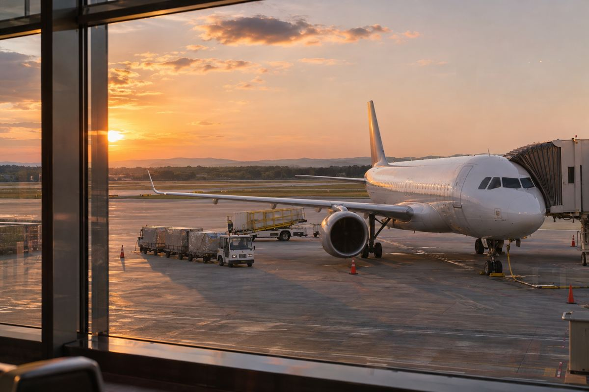


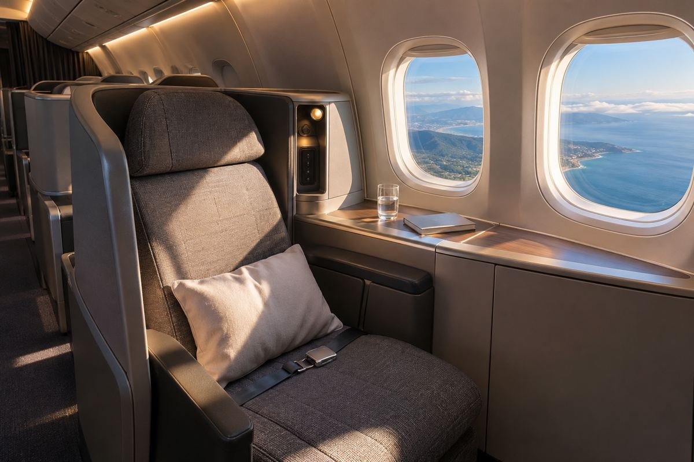


항공
프런티어, 퍼스트 클래스 예약 시작…2027년 3월 5일 탑승 일정부터
앞 두 줄에 2대 2 좌석, 3~8열에 추가 다리 공간을 배치한다. 전원과 인터넷은 기체별로 설치한다.
읽기 ↗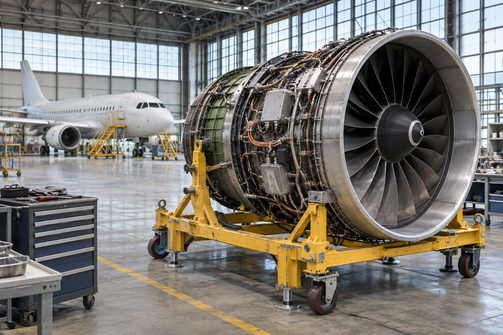

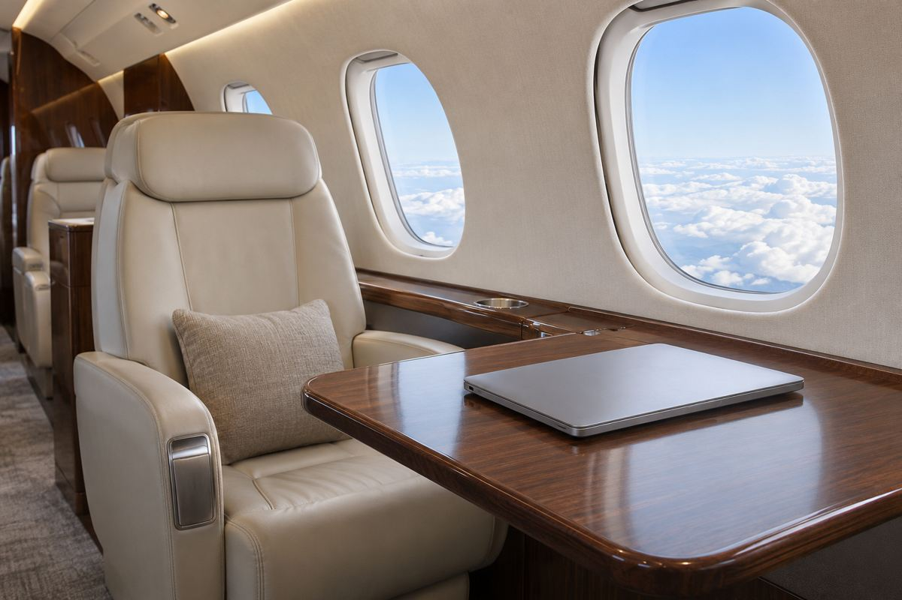


항공
에미레이트 프리미엄 이코노미, 유럽·영국 41개 취항지 중 31곳으로 확대
파리 샤를드골은 10월 25일 추가됐다. 목적지 수와 개별 편의 객실 제공 여부는 기준이 다르다.
읽기 ↗

항공
플라이나스 A320ceo 마지막 4대 퇴역…새 발표 기준 전체 66대
11월 9일 A320neo 두 대 인수와 구형 퇴역을 함께 알렸다. 공식 소개 페이지에는 이전 68대 집계가 남아 있다.
읽기 ↗

항공
에어버스 A350 초장거리형, 2만3155km 시험비행으로 거리 기록
멜버른에서 툴루즈까지 24시간 24분 비행했다. 7월 시험 결과를 11월에 발표했으며 콴타스의 여객 운항은 2027년 계획이다.
읽기 ↗


항공기 생산
에어버스, 10월 74대 인도…주문 202대와 다른 숫자인 이유
10월 말 누적 인도는 621대다. 주문, 인도, 실제 취항을 나누어 봐야 항공사 공급 상황이 보인다.
읽기 ↗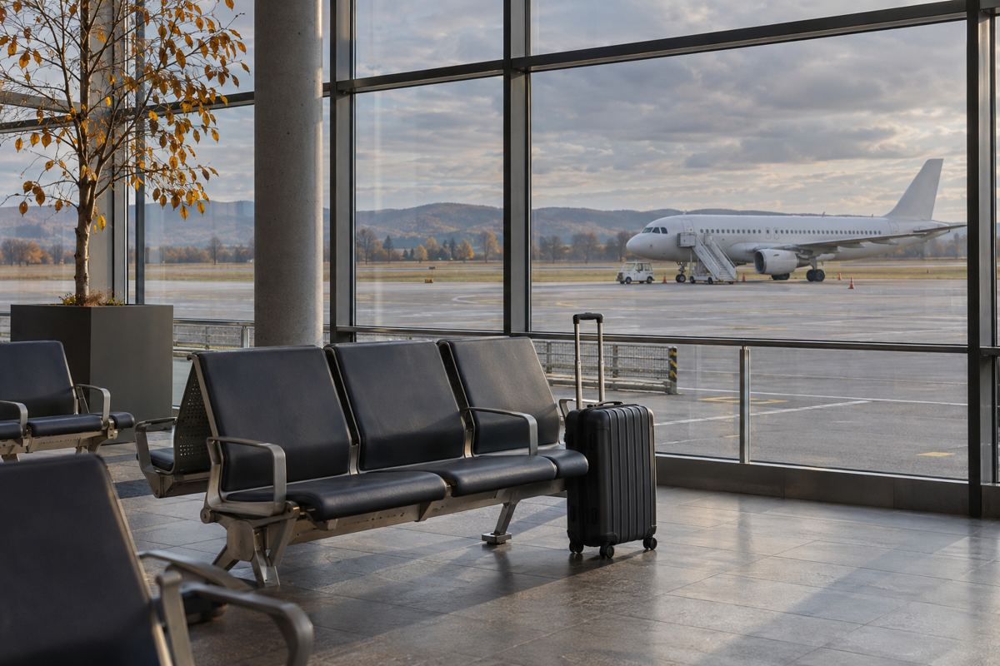
공항·노선
TUI, 안트베르펜 철수 일정 안내…노선마다 마지막 날짜 달라
공식 안내에는 테네리페 11월 8일, 말라가·알리칸테는 내년 3월로 적혔다. 공항 전체 폐쇄를 뜻하지 않는다.
읽기 ↗

여행·운항
에어아시아, 몬순철 공항 이동 여유 당부…국제선 3시간 전 도착 권고
11월 2일 안내는 연말 혼잡과 도로 사정을 함께 다룬다. 도착 권고 시간과 체크인 마감은 다른 기준이다.
읽기 ↗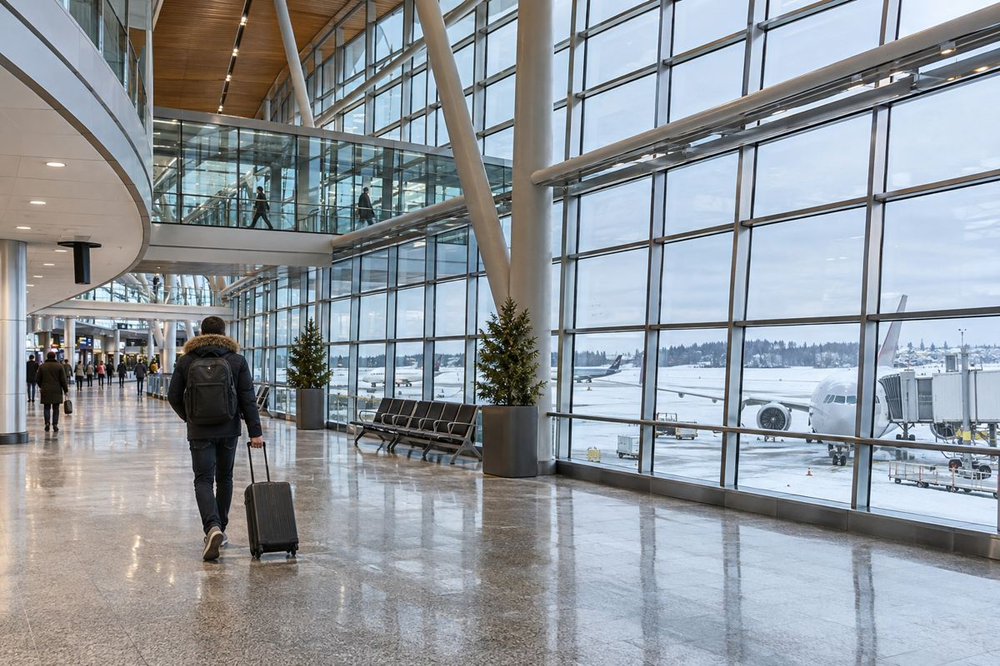

기단·객실
에어프랑스 A220 60호기 인수, 와이파이는 기종보다 개별 기체를 봐야
11월 6일 인수를 발표했다. A220 기단의 85%에 고속 무료 와이파이가 적용됐지만 모든 기체가 같은 상태는 아니다.
읽기 ↗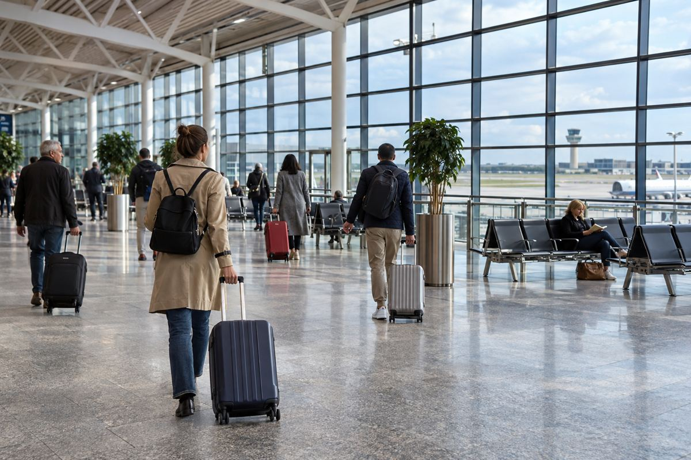
노선 재개
PIA, 버밍엄–이슬라마바드 12월 1일 재개 계획…주 3회 직항
공항이 11월 3일 발표했다. 영국 출발은 화·목·토요일이며, 현지 시각과 도착 날짜를 따로 읽어야 한다.
읽기 ↗
시간표 해설
ANA 나리타–호놀룰루 NH182, 11월 6~20일 매일 운항 시간표
8월 20일 갱신 시간표의 이번 주 적용 내용을 확인했다. NH182의 기간별 편수와 노선 전체의 편수는 구분해야 한다.
읽기 ↗
국제선 연결
아메리칸항공, 마이애미–카프아이시앵 매일 운항 재개 발표
11월 1일 재개를 알렸다. 카리브·중남미 100번째 목적지라는 숫자와 구체적인 도착 공항을 구분해 읽었다.
읽기 ↗
신규 노선
flyadeal, 제다–러크나우 직항 시작…발표보다 이틀 먼저 운항
11월 6일 배포 자료는 11월 4일 시작을 알렸다. 인도 세 번째 정기 목적지에 주 3회 A320neo를 투입한다.
읽기 ↗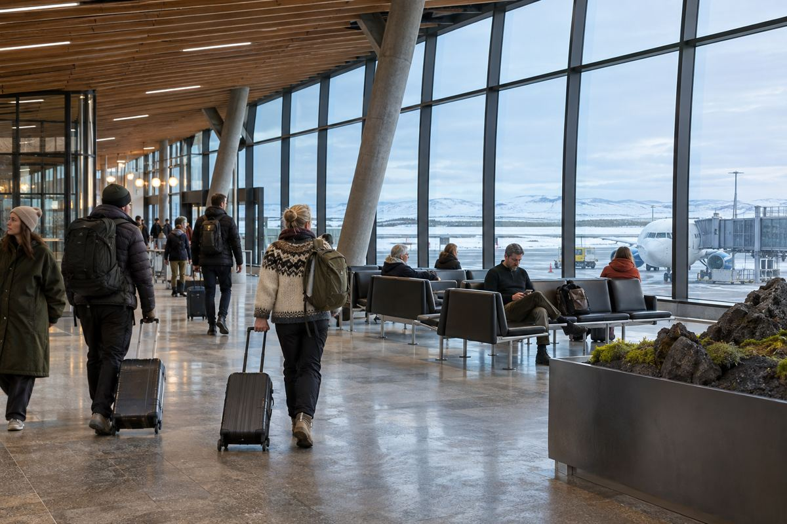
국제선
아이슬란드에서 영국 북부로, easyJet 두 노선은 이미 운항 중
11월 6일 공항 발표는 뉴캐슬 10월 27일, 리버풀 11월 2일 시작을 확인했다. 두 노선 모두 주 2회 겨울편이다.
읽기 ↗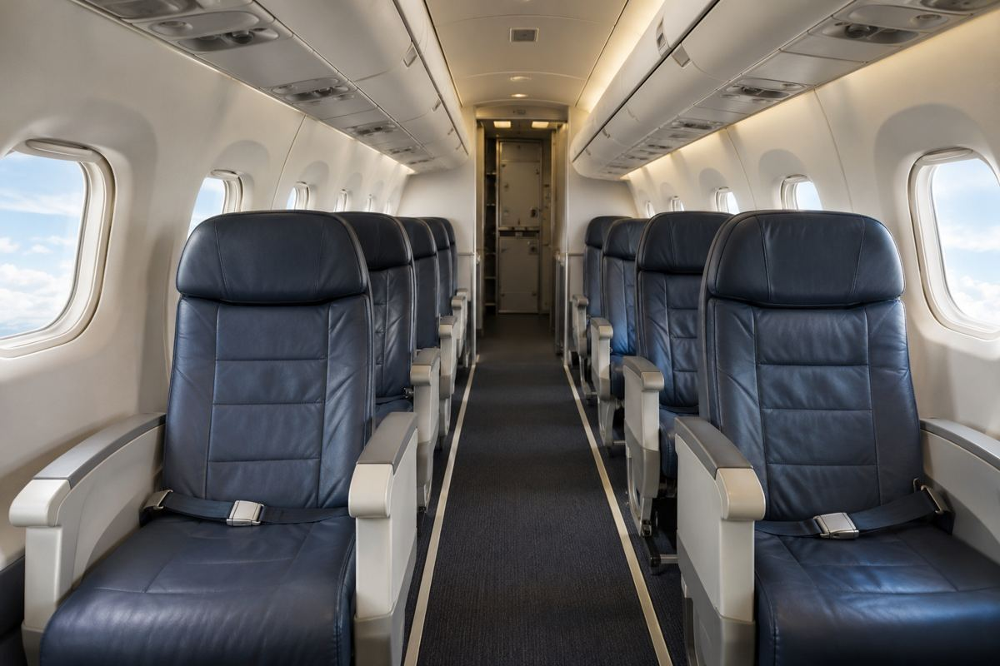
노선·객실
Porter, 에드먼턴 겨울 국제선 확대…피닉스는 11월 6일 시작 일정
푸에르토바야르타에 이어 미국·멕시코 세 도시를 더한다. 132석 E195-E2와 운임별 식사 조건을 함께 살펴봤다.
읽기 ↗
기내 경험
카타르항공, 한스 짐머의 음악을 기내에…소리로 잇는 여행의 단계
11월 6일부터 새 음악을 제공한다고 발표했다. 5곡 앨범은 좌석이나 기종이 아닌 항공사의 소리 정체성을 확장한다.
읽기 ↗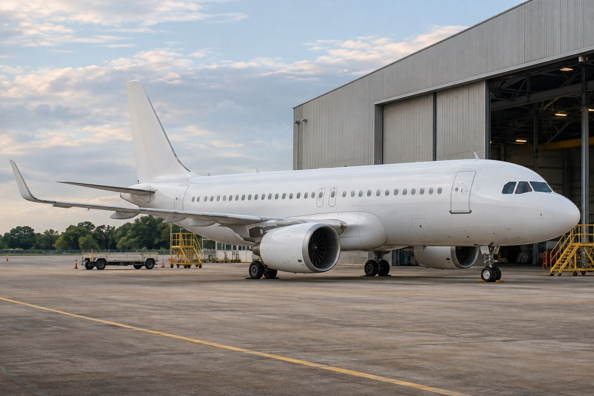
항공기 발주
Avolon, 737-10 140대 확정 구매…항공사 아닌 리스사의 대형 주문
11월 4일 계약 확정을 발표했다. 주문 잔고와 실제 인도·취항은 서로 다른 단계다.
읽기 ↗
항공 연구
A320이 비행 실험실로, 지상 시험 뒤에 필요한 하늘의 데이터
에어버스가 ATRA의 가동 검증 완료를 알렸다. 2025년 구조 변경 후 첫 비행과 이번 시스템 검증은 다른 단계다.
읽기 ↗
항공사·기단
KLM이 작은 비행기를 늘리려는 이유, 유럽 노선은 환승의 출발점이다
유럽 기단에서 E195-E2의 역할을 키우는 방안을 발표했다. 좌석을 채우는 효율과 장거리 연결을 함께 바꾸는 계획이다.
읽기 ↗
기재·첫 운항
토론토로 출발한 KLM 첫 A350, 새 비행기가 노선에 자리 잡기까지
10월 30일 첫 여객 운항을 마쳤다. 첫 비행의 기념성과 이후 정기 배치의 실용적인 의미를 살펴봤다.
읽기 ↗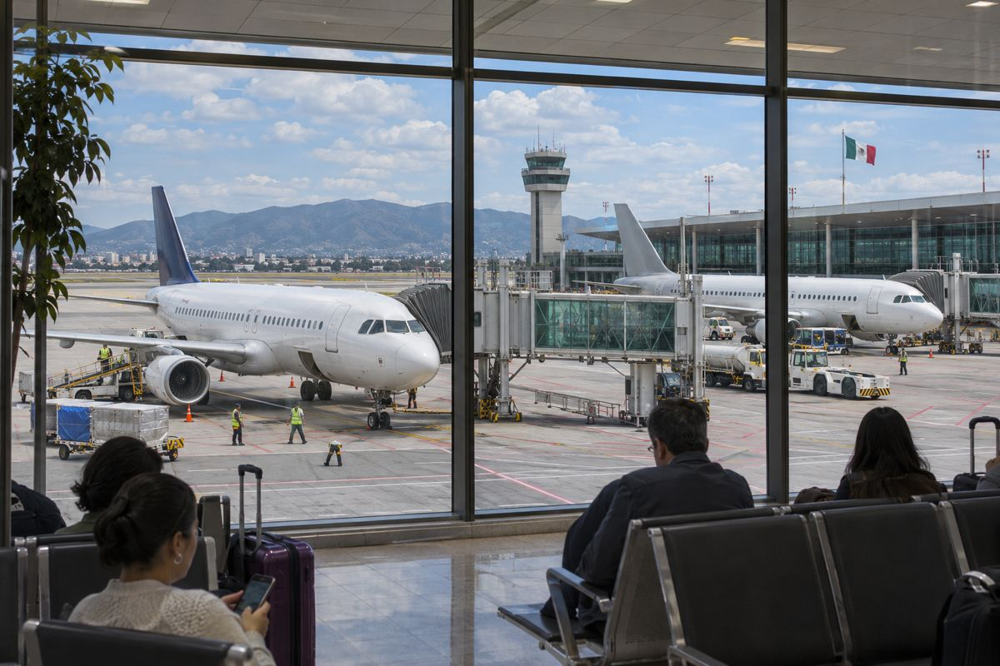
항공사 제휴
루프트한자, TAP 지분 인수 계약…리스본 연결망을 보는 이유
초기 지분 44.9% 인수 계약을 체결했다. 거래 종결에는 규제 승인이 남아 있으며, 승객 혜택도 계약만으로 즉시 바뀌지는 않는다.
읽기 ↗
공항·디지털
프랑크푸르트 A16의 실험, 직원이 승객에게 다가오는 탑승구
고정 카운터 대신 태블릿을 든 직원, 실시간 안내 화면과 작업 공간을 결합했다. 공항 전체가 바뀐 것은 아니다.
읽기 ↗
객실·아시아
싱가포르행에도 Allegris, 객실 이름과 기종을 함께 봐야 하는 이유
뮌헨 노선의 새 객실 운항을 발표했다. 12월에는 A350-1000과 A350-900을 교대로 배치할 계획이다.
읽기 ↗
노선
쿠알라룸푸르–프랑크푸르트 직항, 이른 아침 도착이 연결하는 여행
루프트한자가 주 5회로 운항을 시작했다. 야간 출발과 다음 날 아침 도착이라는 시간표를 여행자의 관점에서 읽었다.
읽기 ↗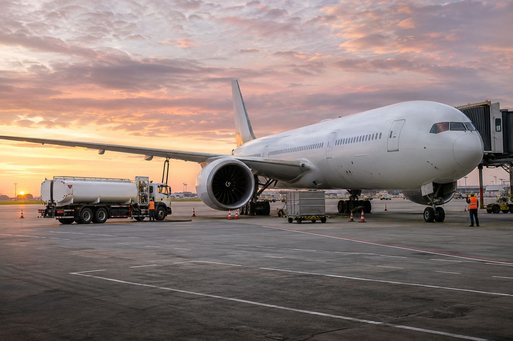
운임·환경
Green Fare에서 Impact Fare로, 추가 운임이 어디에 쓰이는가
루프트한자 그룹이 운임 이름을 바꿨다. SAF 활용과 외부 기후사업 지원은 구분해서 읽어야 한다.
읽기 ↗
마일리지·여행
아메리칸항공 마일로 미식 여행, 좌석 밖으로 넓어지는 사용처
미쉐린 가이드와 협업을 발표했다. 2027년 체험 일정이 예고됐지만 필요한 마일과 상세 조건은 별도 확인이 필요하다.
읽기 ↗
정비·산업
A350 부품을 함께 쓰는 창고, 새 합작사가 겨냥한 지상 대기시간
에어버스와 에어프랑스가 부품 지원 합작사를 설립했다. 정비에서는 고장 진단만큼 교체품이 도착하는 시간이 중요하다.
읽기 ↗정비 해설
비행한 시간만큼 정비비를 낸다? A220의 ‘시간제 지원’을 읽는 법
에어버스가 FHS의 부품 지원 구조를 소개했다. 비용을 예측하는 계약과 정비 작업의 기준은 구분해야 한다.
읽기 ↗기재·노선
SWISS, 12월 15일부터 뭄바이에 A350…매일 운항과 매일 A350은 다르다
취리히–뭄바이에 새 객실을 투입한다. 1월 4일부터는 노선은 매일 유지하지만 A350은 주 6일 운항할 계획이다.
읽기 ↗운항·서비스
ZIPAIR, 인천–나리타 임시편 판매…새 기재 인터넷은 인증 대기
11월 27일~12월 21일 운항을 예고했다. 신규 도입 예정 기재는 인증 완료 전까지 기내 인터넷을 제공하지 못할 전망이다.
읽기 ↗조종사 교육
에어버스·Blue Angels Air, 인도 조종사 양성에 튀니지 교육 경로 연다
첫 교육생은 2027년 튀니지에서 훈련을 시작할 계획이다. 유럽 기준 교육 이후 인도 면허 전환 절차가 남는다.
읽기 ↗기내 연결
유나이티드 좌석 화면에 내 Spotify 계정…Starlink 설치만으로는 부족
QR 인증으로 개인 보관함을 불러온다. 대상 화면과 통신 장비가 갖춰진 편부터 시작하며 내년 봄 기단 절반으로 확대할 계획이다.
읽기 ↗항공사 경영
에미레이트 그룹 반기 세전이익 66% 감소…흑자와 현금은 구분해서 봐야
2026/27 회계연도 상반기 실적을 11월 5일 발표했다. 비교 기준은 작년 같은 반기이며, 현금 잔액은 3월 말과 비교했다.
읽기 ↗노선
카타르항공, 도하·보고타·카라카스 잇는 주 2회 운항 개시
11월 4일 첫 운항을 발표한 QR783은 도하에서 보고타를 거쳐 카라카스로 간 뒤 도하로 돌아온다. 세 도시를 잇는 순서가 예약 조건을 좌우한다.
읽기 ↗항공사 제휴
영국항공·Viva 공동운항, 멕시코 13개 도시를 한 예약으로
런던행과 연결되는 Viva 운항편에 영국항공 편명이 붙는다. 예약 편의가 늘어나는 만큼 실제 운항사와 항공권 조건을 읽어야 한다.
읽기 ↗
항공 화물
에미레이트 스카이카고, AI 서버 운송 전용 상품 출시
서버 랙과 GPU 등 장비를 위한 우선 적재·전문 취급·운송 상태 추적을 묶었다. 데이터센터 일정에서 항공 운송이 맡는 역할을 살펴봤다.
읽기 ↗노선·객실
에미레이트, 베트남 A350 확대를 두 단계로 시행
호찌민은 11월 1일부터 하루 두 편에 A350을 배치하는 일정이다. 하노이 두 편은 12월 1일 전환 예정이다.
읽기 ↗기내 서비스
에미레이트, 11월 7~8일 인도 9개 노선에 디왈리 기내 서비스
두바이와 인도 9개 도시를 오가는 대상편에 전 객실용 디왈리 과자를 마련한다. 발표일과 제공일을 구분해 정리했다.
읽기 ↗항공기·노선
A220이 바꾸는 노선 지도, 작은 비행기의 긴 연결
Airbus가 A220의 노선 운용 사례를 소개했다. 중요한 질문은 얼마나 멀리 나는가보다, 어떤 수요를 직항으로 연결할 수 있는가다.
읽기 ↗
항공 기술
조종사 교육도 플랫폼으로, Skywise가 훈련 도구를 모은다
MATe·VPT·Flight eLearning을 Skywise에 통합한다. 가상 조종석은 실제 비행 전에 절차를 익히는 학습 공간으로 쓰인다.
읽기 ↗항공 기술
Aliaca 수직이착륙형 인증, 활주로 없는 운용에 주목
Airbus는 프랑스 DGA가 U010 Aliaca의 VTOL 형식을 공식 인증했다고 밝혔다. 인증과 실제 배치는 구분해서 읽어야 한다.
읽기 ↗항공 화물
여객기 767의 두 번째 일자리, 아이슬리스가 화물기 개조를 택한 이유
보잉과 아이슬리스가 767 한 대를 화물기로 개조하기로 했다. 추가 두 대는 옵션으로 남겨뒀다.
읽기 ↗
항공사
Atlantic Airways, A320neo 2대 추가 주문
Airbus는 페로제도 항공사 Atlantic Airways가 A320neo 두 대를 추가 주문했다고 발표했습니다.
읽기 ↗